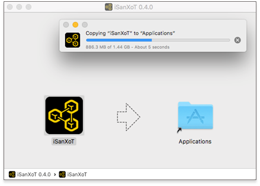
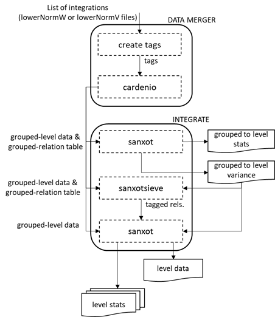
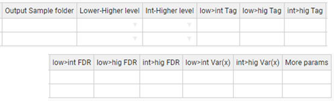
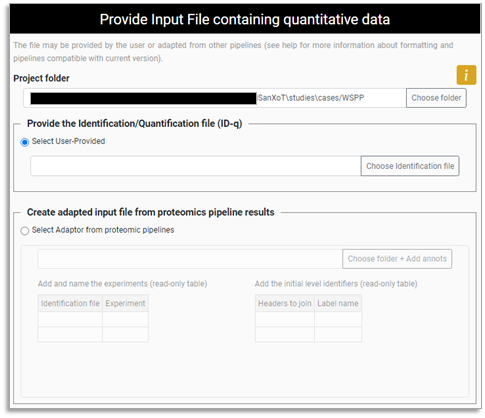

User Guide:
Help and documentation
(1.0.x)
Table of contents
· License
o Download
· Modules
§ RATIOS
§ SBT
§ WSPP-SBT
§ WPP-SBT
§ WPPG-SBT
§ REPORT
§ SANSON
§ Keywords for the Task-Tables
§ Asterisk is our jack of all trades
§ Filter (for REPORT and SANSON)
o Input provided by user
o Inputs adapted from Proteomic Pipelines results
iSanXoT is a standalone application for statistical analysis of mass spectrometry-based quantitative proteomics data. iSanXoT builds upon SanXoT[1], our previous publicly available implementation of the weighted spectrum, peptide, and protein (WSPP) statistical model[3] using the Generic Integration Algorithm (GIA)[2].
iSanXoT executes several kind of workflows for quantitative high-throughput proteomics, systems biology and the statistical analysis, integration and comparison of experiments.
iSanXoT was developed by the Cardiovascular Proteomics Lab/Proteomic Unit at The National Centre for Cardiovascular Research (CNIC, https://www.cnic.es).
License
This application is licensed under a Creative Commons Attribution-NonCommercial-NoDerivs 4.0 Unported License.
https://creativecommons.org/licenses/by-nc-nd/4.0/
You are free to:
Share - copy and redistribute the material in any medium or format.
The licensor cannot revoke these freedoms as long as you follow the license terms.
Under the following terms
Attribution:
You must give appropriate credit, provide a link to the license, and indicate if changes were made. You may do so in any reasonable manner, but not in any way that suggests the licensor endorses you or your use.
NonCommercial:
You may not use the material for commercial purposes.
NoDerivatives:
If you remix, transform, or build upon the material, you may not distribute the modified material.
No additional restrictions:
You may not apply legal terms or technological measures that legally restrict others from doing anything the license permits.
Notices
You do not have to comply with the license for elements of the material in the public domain or where your use is permitted by an applicable exception or limitation. No warranties are given. The license may not give you all of the permissions necessary for your intended use. For example, other rights such as publicity, privacy, or moral rights may limit how you use the material.
Download
The multiple releases are available in the "release" section, located in the following link:
https://github.com/CNIC-Proteomics/iSanXoT/releases
Available operating systems
iSanXoT maintains the following operating systems and architectures and may add additional ones in the future:
· Windows 10 Pro (x64)
· MacOs High Sierra (10.13.6)
· Ubuntu 20.04 (x64)
Windows distribution
The iSanXoT Windows distribution is packaged in a NSIS Launcher (exe file).
Download the exe Launcher: iSanXoT_Launcher_1.X.X.win32-x64.exe
Double-click the Launcher file; the Installer window will show up:
WARNING: Windows Defender SmartScreen might show a prompt suggesting that you cancel the installation; in such case click “More info” and then select the “Run anyway” option.

Then, you can choose the iSanXoT installation folder:
Wait while iSanXoT is being installed.
Once the installation has been completed, you are ready to run .

MacOS distribution
The iSanXoT MacOS distribution is packaged in a DMG container.
Download the DMG file: iSanXoT_Launcher_1.X.X.darwin-x64.dmg
Double-click the DMG file, then a Finder window will show up. This window will usually display iSanXoT’s installer icon and a shortcut to the Applications folder, together with some sort of linking arrow:

Simply drag the iSanXoT icon to your Applications folder...

and you're done: the iSanXoT application is now installed.
Linux distribution
The iSanXoT Linux distribution is packaged in an AppImage.
Download the AppImage: iSanXoT_Launcher_1.X.X.linux-x86_64.AppImage

The AppImage file is just the application's compressed image. When executed, the application is mounted in a temporal folder. However, for the correct behaviour, the application has to be extracted to the "squashfs-root" folder in the current working directory using:
./iSanXoT_Launcher_1.X.X.linux-x86_64.AppImage --appimage-extract
Then, launch the iSanXoT application using:
squashfs-root/AppRun
This chapter describes iSanXoT’s graphical user interface and how to set up an analysis with iSanXoT.
Opening the iSanXoT application
To open the iSanXoT application:
· In Windows: from the Start menu choose Programs > iSanXoT; or double-click the iSanXoT desktop icon.
· In MacOS: double-click the iSanXoT icon from the Applications folder.
· In Linux: from the AppImage file.
The contents are extracted to the "squashfs-root" directory in the current working directory using:
./iSanXoT_Launcher_1.x.linux-x86_64.AppImage --appimage-extract
Now you can launch the iSanXoT application:
squashfs-root/AppRun [...]
Installing required packages
The first time iSanXoT is run a window will show up displaying a progress bar to inform you about the percentage of packages that have been installed. These packages contain the libraries required by iSanXoT’s backend, and are installed the first time you open the application.

Figure 1. Installation window.
Closing the iSanXoT application
WARNING: If valid changes were made to your project, make sure to save it before quitting iSanXoT, as any changes will be lost otherwise (you won’t be prompted for saving upon closing).
To close the iSanXoT application:
In Windows and Linux: choose Project > Exit, or click the X in the upper right corner of the main iSanXoT window.
In Mac: choose iSanXoT (menu) > Exit, or click the red X in the upper left corner of the main iSanXoT window.
A dialog window will show up asking you to confirm the application closing. Click “Yes” if you really want to quit iSanXoT.
iSanXoT Projects
An iSanXoT project is primarily a container used to structure the data coming from your input file(s) and your workflow. The input file contains the identification and quantification data (for further details see the Input Adaptor Section). These fully-customisable workflows can perform quantitative proteomics analysis, systems biology analysis, and comparison and merging of experimental data from technical or biological replicates.
Figure 2. Project menu.
Creating a new project
Creating a project is the first step when conducting an analysis with iSanXoT. By selecting Project > New Project a window will show up where you can provide a name for the project as well as select a project folder where iSanXoT output files will be stored.

Figure 3. Window that creates a new project.
Opening a project
By selecting Project > Open Project as a folder selection dialog box shows up that allows the user to indicate the location of an already existing project folder to be opened by iSanXoT.
iSanXoT Main Window
The iSanXoT main window consists of an overhead menu, adaptor and module tabs, and content and execution panels (Figure 4).
Menu
The Menu contains the following items:
· Project: Allows operations related to projects and workflows.
· Processes: Links to real-time display of the processes currently in execution by iSanXoT (see Running Processes Section).
· Help: Houses the different Sections of iSanXoT help.
Content tabs
1. Five tabs are displayed in iSanXoT’s project page. The Input tab displays the Project folder, where iSanXoT output files are stored, as well as the Identification file used in the project (see Input Adaptor Section). The remaining four tabs give access to iSanXoT modules: Relation Tables, Basic Modules, Compound Modules, and Report Modules.

Figure 4. Main View of iSanXoT.
Content panel
This panel houses the elements of the Input and Modules tabs, which can be accessed through the sidebar menu showing on the left side of the panel. A title and a brief description of the Input/Module element is provided, as well as help icon linking to additional information on the specific Input element or Module selected.
Execution panel
The execution panel, located on the bottom of the main window, allows the user to indicate the number of processors to be used by iSanXoT, 4 by default. The Start button launches the execution of the workflow shaped by the Input elements and Modules.
Importing and Exporting Workflows
A project is shaped by a workflow that instructs iSanXoT how to process the data provided by the input file(s) . While the whole project, including workflow and data, can be saved as indicated below (see the Saving a project section), there is a way to import and export just the workflow structure using iSanXoT menu (Figure 2).
Import Workflow
This option allows to import the task-tables of a workflow. For that, you have to provide the folder where the workflow is saved.
Export Workflow
The export workflow saves the task-tables of a workflow in the folder indicated by the user.
Executing a Project
Once your project contains all the necessary input data and workflow elements, you can execute the workflow by clicking “Save and Run” in the “Execution panel” after indicating the number of processors to be allocated for iSanXoT (see Execution panel above).
Bear in mind that every time you click the “Save and Run” button to execute a workflow, the project is first validated for consistency and saved. To save a project without executing it, you must use the appropriate menu item as explained in the next Section.
Saving a project
The Project > Save Project option saves your project, which contains the input data and the workflow elements, to the “Project folder”. The project files are saved in the “.isanxot” folder. WARNING: Do not manipulate or delete the information stored in the “.isanxot” folder; you risk losing your project.
Whenever iSanXoT is prompted to save a project, the corresponding workflow is first validated for consistency and won’t be saved when failed. Neither will the workflow execute if it has not been validated previously.
As well as the “.isanxot” folder, the following folders are necessary to shape your project:
- Exps, to store the files created by the Input Data adapters.
- Jobs, to store the sample folders of your workflow.
- Rels, to store the Relation Tables created by the RELS CREATOR module (see below).
- Reports, to store the Report files created by the REPORT module (see below).
- Stats, to store statistical data.
- Logs, to store the workflow execution log files.
Running Processes
When workflow execution successfully starts, a new window shows up displaying information about the processes currently running:
· The Project logs table shows project execution status. Several project executions can be monitored here, and the user must click a row to have the corresponding workflow logs displayed (see below).
· Workflow logs table displays status for the jobs set up in the workflow modules. If you click on a row you will see the trace log of the involved jobs (unless the job status is “cached”).

Figure 5. View of running processes.
The running processes window can be also reached from the menu by selecting the “Processes > Main page” option.
The iSanXoT desktop application houses a number of modules based on the SanXoT software package [1]. The information required to setup and execute every module is provided in a task-table.
There are four types of modules:
· Relation tables is a module that creates the relation tables used by the iSanXoT modules.
· The Basic modules call the individual scripts included in the SanXoT software package [1].
· The Compound modules perform a sequence of consecutive integrations based on the weighted spectrum, peptide and protein (WSPP) statistical model [3] and the systems-biology triangle (SBT) algorithm [2].
· Finally, there are two Reports: REPORT generates report files displaying the quantitative results produced by the above Basic and Composite modules when a workflow is executed; SANSON generates a similarity graph showing relationships between functional categories on the basis of the protein elements they share.
Relation tables module
RELS CREATOR
This module generates relation tables (RT) from tab-separated values (TSV) files. Relation tables, which are TSV files relating lower-level identifiers (e.g. peptides) to the corresponding higher-level elements (e.g. proteins), are required for module execution. For this reason, the naming convention for the file indicated under “Relation Table to be created” in the RELS CREATOR task table is lower level + “2” + higher level; e.g. whether an integration is from the “peptide” level to the “protein” level, a relation table called “peptide2protein” will be necessary.
The fields showing in the RELS CREATOR task table are (Figure 6):
· Forced execution: This checkbox field indicates whether to force the execution or not.
· Relation Table to be created specifies relation table filenames. As commented above, the naming convention for these files is lower level + “2” + higher level; e.g. whether an integration is from the “peptide” level to the “protein” level, a relation table called “peptide2protein” will be necessary.
· Column name of Lower level is the column header that designates which elements from the indicated file (see below) will be taken as lower level elements in the resulting relation table.
· Column name of Higher level is the column header that designates which elements from the indicated file (see below) will be taken as higher level elements in the resulting relation table.
· Column name of 3rd column is the column header that designates which elements from the indicated file (see below) will be taken as third column elements in the resulting relation table.
· Table from which RT is extracted is the full path name for the TSV file to be used to build the relation tables. If the cell is empty, the Input file (ID-q.tsv) is applied for iSanXoT workflow.
Figure 6. A sample Task-Table in the example of RELS CREATOR module.
Basic modules
LEVEL CREATOR
This module creates levels, which are TSV files containing identifiers, log2-ratio values and statistical weight values. The data are extracted from the Identification/Quantification file (see Input Adaptor section).
The following fields are displayed in the LEVEL CREATOR task table (Figure 7):
· Forced execution: This checkbox field indicates whether to force the execution or not.
· Experiment is the column header that designates which elements from the Identification file will be used to create the level indicated.
· Identifier column header is the identification file column header that unambiguously identifies the scans.
· Ratio numerator column specifies which column header from the identification file designates the quantitative values to be used as a numerator for the log2-ratio calculation.
· Ratio denominator column(s) specifies which column header from the identification file designates the quantitative values to be used as a denominator for the log2-ratio calculation.
· Level to be created designates the level name.
· Output Sample folder indicates the name of the folder where the level data file will be saved.
Figure 7. A sample task-table in the LEVEL CREATOR module.
LEVEL CALIBRATOR
This module calibrates the above-described levels using the “Klibrate” program included in the SanXoT software package [1].To perform the calibration, two parameters (weight constant and variance) are iteratively calculated using the Levenberg-Marquardt algorithm (for more details see the information about “Klibrate” in the SanXoT software package [1]).
The output calibrated level contains new statistic weight values for the identifier and log2-ratio elements displayed in the uncalibrated level data file. This is necessary for the levels to be used as inputs to the INTEGRATE module.
Standard parameters
The fields to be completed in this module are (Figure 8):
· Forced execution: This checkbox field indicates whether to force the execution or not.
· Sample folder(s) indicates the name(s) of the folder(s) containing the uncalibrated data file(s) that were previously generated by the LEVEL CREATOR module.
· Lower level for integration indicates which lower level elements are to be used in the integration carried out for the calibration.
· Higher level for integration indicates which higher level elements are to be used in the integration carried out for the calibration.
· Name of calibrated level is the name for the output data file containing the new, calibrated statistical weight values.
· Output Sample folder specifies the name of the folder where the output data file containing the new, calibrated statistical weight values will be saved. If the cell is empty, the output sample folder is the given “Sample folder” (second column).
Figure 8. A sample task table in the LEVEL CALIBRATOR module.
Advanced parameters
The LEVEL_CALIBRATOR module accepts the following additional parameters (Figure 9):
To perform the calibration two parameters, have to be calculated: the k (weight constant), and the variance.
· K-constant sets a forced value for the k-constant. Using this parameter, the introduced value is forced as K-constant.
· Var(x) sets a forced value for the variance. Using this parameter, the introduced value is forced as the variance.
· More params allows adding more parameters to the internal programs of the module. For more details see More params in the “Special Parameters” Section.
Figure 9. A task-table displaying advanced parameters for the LEVEL CALIBRATOR module.
INTEGRATE
The INTEGRATE module performs statistical calculations based on the WSPP model by iteratively applying the generic integration algorithm (GIA) [2] on calibrated data files (Figure 10).
Integrations are carried out from lower level data to higher level data (e.g. from the peptide level to the protein level and from the protein level to the gene level).
Figure 10. Schematic representation of the INTEGRATE module. The integration is carried out from any lower level to any higher level using the programs “SanXoT” and “SanXoTSieve” and the generic integration algorithm (GIA).
More in detail, the INTEGRATE module needs two TSV files as inputs:
1. A data file containing three data columns: identifier (a text string that is used to unambiguously identify the low level elements), quantitative value (log2-ratio of the two measurements to be compared) and statistical weight (a parameter that measures the accuracy of the quantitative value).
2. A relation table, which links the lower level identifiers to those in the higher level. This file contains two columns: higher level identifiers on the left and lower level identifiers on the right.
Figure 11. The INTEGRATE module flowchart. A first integration is done with “SanXoT” that calculates the variance; then “SanXoTSieve” removes outliers tagging them in a new relation table; finally, a second integration is done with “SanXoT” using the variance calculated.
For every integration, the SanXoT program calculates the general variance using a robust iterative method. Then SanXoTSieve is used to tag outlier elements [3] by assessing the probability that a lower level element be a significant outlier of the standardized (i.e. N(0,1)) log2-ratio distribution. The most extreme outliers are thus removed sequentially and the integration repeated until all outliers below a user-defined false discovery rate (FDR) threshold have been removed. Finally, a second integration is carried out by SanXoT using the variance calculated in the first integration and discarding the outliers tagged in the new relation table (Figure 11).
The output data files generated by INTEGRATE contain the quantitative data for the higher level and can be used as inputs to other modules; in addition, each integration generates several additional files which contain information about the integration. For further details see SanXoT documentation [1].
Standard parameters
The parameters to be provided in the INTEGRATE module task table are (Figure 12):
· Forced execution: This checkbox field indicates whether to force the execution or not.
· Sample folder(s) indicates the names of the folder(s) where the lower level data file is located.
· Lower level indicates the name of the lower level data file to be used. This file contains three data columns: identifier, quantitative value and statistical weight.
· Higher level indicates the name of the higher level to which the lower level elements will be integrated.

Figure 12. A sample task-table in the INTEGRATE module.
Advanced parameters
The INTEGRATE module accepts the following additional parameters (Figure 13):
· Output Sample folder is the name of the folder where the level data and statistics are saved.
· Tag is a text label that indicates which elements from the lower level are integrated into the higher level. The tags must be specified in the third column of the corresponding Relation Table. This allows the user to discard elements for integration without needing to eliminate them from the Relation Table. Thus, if the label ”marked” is used as a Tag, only the lower level elements containing the label marked in the third column of the lower_level2higher_level Relation Table will be integrated. Logical operators can also be used in the Tag field to make complex decisions.
Tag is a parameter to distinguish groups to perform the integration. For instance, if the user specifies “marked” the elements containing the label “marked” in the third column of the “lower_level2higher_level” Relation Table will be included in (or discarded from) the integration.
The tag can be used by inclusion, such as "mod" or by exclusion, putting first the "!" symbol, such as "!mod". Tags should be included in a third column of the relations file.
Different tags can be combined using logical operators "and" (&), "or" (|), and "not" (!), and parentheses. Some examples:
!out&mod
!out&(dig0|dig1)
(!dig0&!dig1)|mod1
mod1|mod2|mod3
Warning: Unless specified otherwise by the user, by default iSanXoT eliminates outliers from the lower level according to an FDR<1% threshold.
iSanXoT automatically adds the tag “out” in the third column of the relation table to label outliers, so that they are not integrated. It is not thus recommended to use this tag for other purposes.
Note that although the discarded elements will not be included in calculations, the parameter Z will be calculated and tabulated in the corresponding output (outStats) file.
For further details see SanXoT wiki [6].
· FDR is an FDR threshold other than the default value (0.01, i.e. 1%) for outlier removal. If “0” is specified as the FDR value, then no outliers will be discarded.
· Var(x) sets a fixed value for the variance. The default value (blank) means that the variance will be iteratively calculated based on the Levenberg-Marquardt algorithm in the first Lower level > Higher level integration.
· More params allows adding more parameters to the internal programs of the module. For more details see More params in the “Special Parameters” Section.
Figure 13. A sample task-table displaying advanced parameters for the INTEGRATE module.
NORCOMBINE
The NORCOMBINE module combines technical or biological replicates (Figure 14). For example, NORCOMBINE can be used to merge the protein-level data from 4 individual patients and 4 individual controls into a patient- and a control-level protein dataset, respectively.
Figure 14. Schematic representation of the NORCOMBINE module used to combine technical or biological replicates.
Experiment merging relies on the “Cardenio” program from the SanXoT software package [1], which is used to generate merged data files and relation tables that are later integrated to the grouped level using “SanXoT” and “SanXoTSieve” (Figure 14).
NORCOMBINE requires the user to specify which lowerNorm files contain the necessary data for the samples to be combined. These lowerNorm files, previously generated by the INTEGRATE module, display the lower level identifiers on the left, followed by the corresponding centred log2-ratio values (i.e. the values obtained after subtracting the high level value) in the second column, and either the integration statistical weight (in the case of lowerNormV) or the variance (for lowerNormW). The SanXoT program “Cardenio” [1] is then used to generate merged data files and relation tables that are later integrated to the grouped level using “SanXoT” and “SanXoTSieve” (Figure 15).

Figure 15. The NORCOMBINE module flowchart.
Standard parameters
The default NORCOMBINE module task table shows the following fields (Figure 16):
· Forced execution: This checkbox field indicates whether to force the execution or not.
· Sample folders indicates the names of the folder(s) containing the lower level data (samples) to be combined.
· Level indicates the type of elements to be combined (e.g. peptides or proteins).
· Norm specifies the normalization scheme to be used in the integrations.
· lowerNorm specifies the type of lowerNorm file (see above) to be used.
· Output Sample folder is the name of the folder where the grouped-level data and statistics are saved.
Figure 16. A sample task-table in the NORCOMBINE module. In this case, the asterisk wildcard has been used to select multiple sample folders.
Advanced parameters
The NORCOMBINE module accepts the following additional parameters (Figure 17):
· Tag is a text label that indicates which elements from the lower level are integrated into the higher level. The tags must be specified in the third column of the corresponding Relation Table. This allows the user to discard elements for integration without needing to eliminate them from the Relation Table. Thus, if the label ”marked” is used as a Tag, only the lower level elements containing the label marked in the third column of the lower_level2higher_level Relation table will be integrated. Logical operators can also be used in the Tag field to make complex decisions.
By default, iSanXoT eliminates outliers from the lower level according to an FDR<1% threshold.
For further details, read the Advanced Parameters for the INTEGRATE module.
· FDR is an FDR threshold other than the default value (0.01, i.e. 1%) for outlier removal. If “0” is specified as the FDR value, then no outliers will be discarded.
· Var(x) sets a fixed value for the variance. The default value (blank) means that the variance will be iteratively calculated based on the Levenberg-Marquardt algorithm.
· More params allows adding more parameters to the internal programs of the module. For more details see More params in the “Special Parameters” Section.
Figure 17. A sample task table with advanced parameters in the NORCOMBINE module.
RATIOS
This module prepares the data file and relation table required as a first step in the calculation of a ratio defined by the user (e.g KO vs WT). For that, the new log2-ratio is calculated as the difference between numerator and denominator values, whereas the corresponding statistical weight is assessed according to the method indicated by the user in the V Method filed of the RATIOS task table (Figure 18 and Figure 19):
· max uses the maximum value between the numerator and denominator statistical weight value.
· form uses the value resulting from 1/(1/Vn + 1/Vd), where Vn and Vd are the statistical weight value for the numerator and the denominator, respectively.
· avg uses the average value between the numerator and denominator statistical weight value.

Figure 18. The RATIOS module flowchart.
The RATIOS module task table displays the following parameter fields (Figure 19):
· Forced execution: This checkbox field indicates whether to force the execution or not.
· Ratio numerator column specifies the name of the folder containing the quantitative value to be used as a numerator for the new log2-ratio calculation.
· Ratio denominator column(s) specifies the name of the folder(s) containing the quantitative values to be used as a denominator for the new log2-ratio calculation. The sample folders have to be separated by comma.
· Level designates the level (i.e. peptide, protein, gene or category) at which the ratio is to be calculated.
· Output Sample folder indicates the name of the folder where the resulting log2-ratio and statistical weight values will be saved (e.g. KO_vs_WT).
Figure 19. A sample task-table in the RATIOS module.
SBT
This module is based on the Systems Biology Triangle (SBT) algorithm [2], which performs an integration between the lower and the higher levels using the variance previously obtained in an integration between the lower and an intermediate level (Figure 20). Usually the SBT module is applied to carry out the protein > grand mean integration using the variance associated with the protein > category integration.

Figure 20. Schematic representation of the SBT module.
Standard parameters
The standard parameters to be entered in the SBT module task table are (Figure 21):
· Forced execution: This checkbox field indicates whether to force the execution or not.
· Sample folder(s) indicates the name of the folder(s) where the lower level data are located.
· Lower level indicates the name of the lower level (e.g. protein).
· Intermediate level indicates the name of the intermediate level (e.g. category).
By default, the higher level is the grand mean of the lower level elements.
Figure 21. A sample task table in the SBT module.
Advanced parameters
This module accepts the following additional parameters (Figure 22):
· Output Sample folder indicates an alternative folder to store the resulting log2-ratio and statistical weight values other than “Sample folder(s)”.
· Lower-Higher level and Int(ermediate)-Higher level specify an alternative higher level other than the grand mean of the lower level elements.
· Low(er) > Int(ermediate) Tag and Int(ermediate) > Hig(her) are the text label that indicates which elements from the lower level are integrated into the intermediate level, and the intermediate level are integrated into higher level. The tags must be specified in the third column of the corresponding Relation Table. This allows the user to discard elements for integration without needing to eliminate them from the Relation Table. Thus, if the label ”marked” is used as a Tag, only the lower level elements containing the label marked in the third column of the lower_level2intermediate_level and intermediate_level2higher_level Relation Tables will be integrated. Logical operators can also be used in the Tag field to make complex decisions.
By default, iSanXoT eliminates outliers from the lower level according to an FDR<1% threshold.
For further details, read the Advanced Parameters for the INTEGRATE module.
· Low(er) > Int(ermediate) FDR and Int(ermediate) > Hig(her) FDR determine an FDR threshold other than the default value (0.01, i.e. 1%) for outlier removal in the lower level > intermediate level and intermediate level > higher level integration, respectively. If “0” is specified as the FDR value, then no outliers will be discarded.
· Low(er) > Int(ermediate) Var(x) and Int(ermediate) > Hig(her) Var(x) indicate the variance to be used in the lower level > intermediate level and intermediate level > higher level integration, respectively, as an alternative to the variance calculated in the lower level > intermediate level integration.
· More params allows adding more parameters to the internal programs of the module. For more details see More params in the “Special Parameters” Section.

Figure 22. A sample task table with advanced parameters in the SBT module.
Compound modules
The Compound modules perform a sequence of consecutive integrations based on the WSPP statistical model [3] and the SBT algorithm [2]. In addition, each module creates the initial level and calibrate this initial level. The WSPP-SBT and WSPPG-SBT modules create and calibrate the “scan” level; and the WPP-SBT and WPPG-SBT create and calibrate the “peptide” level.
WSPP-SBT
The WSPP-SBT module performs the following integrations: scan > peptide, peptide > protein, protein > category, peptide > peptideall, protein > proteinall, and category > categoryall. In addition, the SBT algorithm is used to calculate the variance associated to the protein > category integration, which is applied to the protein > proteinall integration.
Standard parameters
The standard parameters required by the WSPP-SBT module are (Figure 23):
· Forced execution: This checkbox field indicates whether to force the execution or not.
· Experiment is the column header that designates which elements from the Identification file will be used in the starting scan > peptide integration.
· Identifier column header is the identification file column header that unambiguously identifies the scans.
· Ratio numerator specifies which identification file column header designates the quantitative values to be used as a numerator for the log2-ratio calculation.
· Ratio denominator specifies which identification file column header designates the quantitative values to be used as a denominator for the log2-ratio calculation.
· Output Sample folder: indicates the name of the folder where the resulting data files will be saved.
Figure 23. A sample task table in the WSPP-SBT, WSPPG-SBT, WPP-SBT, and WPPG-SBT modules.
Advanced parameters
The WSPP-SBT module accepts the following advanced parameters (Figure 24):
· p>q Tag, p>a Tag, c>a Tag are the text label that indicates which elements from the lower level (“p” and “c”) are integrated into the higher level (“q” and “a”). The tags must be specified in the third column of the corresponding Relation Table. This allows the user to discard elements for integration without needing to eliminate them from the Relation Table. Thus, if the label ”marked” is used as a Tag, only the lower level elements containing the label marked in the third column of the lower_level2higher_level Relation table will be integrated. Logical operators can also be used in the Tag field to make complex decisions.
By default, iSanXoT eliminates outliers from the lower level according to an FDR<1% threshold.
For further details, read the Advanced Parameters for the INTEGRATE module.
· s>p FDR, p>q FDR, q>c FDR establish an FDR threshold other than 0.01 (1%) for outlier removal in the integrations scan>peptide, peptide>protein, and protein>category, respectively. If FDR = 0 is selected, then the outliers are not discarded.
· s>p Var(x), p>q Var(x), q>c Var(x) set a fixed value for the variance in the integrations scan>peptide, peptide>protein, and protein>category, respectively. By default, the variance will be iteratively calculated based on the Levenberg-Marquardt algorithm in the first lower level > higher level integration (Figure 10).
· More params allows adding more parameters to the internal programs of the module. For more details see More params in the “Special Parameters” Section.

Figure 24. Task-Table with advanced parameters in the WSPP-SBT module.
WSPPG-SBT
The WSPPG-SBT module performs the following integrations: scan > peptide, peptide > protein, protein > gene, gene > category, peptide > gene, peptide > peptideall, protein > proteinall, gene > geneall, and category > categoryall. In addition, the SBT algorithm is used to calculate the variance associated to the gen > category integration, which is applied to the gen > geneall integration.
Standard parameters
The standard parameters required by the WSPPG-SBT module are (Figure 23):
· Forced execution: This checkbox field indicates whether to force the execution or not.
· Experiment is the column header that designates which elements from the Identification file will be used in the starting scan > peptide integration.
· Identifier column header is the identification file column header that unambiguously identifies the scans.
· Ratio numerator specifies which identification file column header designates the quantitative values to be used as a numerator for the log2-ratio calculation.
· Ratio denominator specifies which identification file column header designates the quantitative values to be used as a denominator for the log2-ratio calculation.
· Output Sample folder: indicates the name of the folder where the resulting data files will be saved.
Advanced parameters
The WSPPG-SBT module accepts the following advanced parameters (Figure 25):
· p>q Tag, q>g Tag, p>a Tag, c>a Tag are the text label that indicates which elements from the lower level (“p”, “q” and “c”) are integrated into the higher level (“q”, “g” and “a”). The tags must be specified in the third column of the corresponding Relation Table. This allows the user to discard elements for integration without needing to eliminate them from the Relation Table. Thus, if the label ”marked” is used as a Tag, only the lower level elements containing the label marked in the third column of the lower_level2higher_level Relation table will be integrated. Logical operators can also be used in the Tag field to make complex decisions.
By default, iSanXoT eliminates outliers from the lower level according to an FDR<1% threshold.
For further details, read the Advanced Parameters for the INTEGRATE module.
· s>p FDR, p>q FDR, q>g FDR, g>c FDR establish an FDR threshold other than 0.01 (1%) for outlier removal in the following integrations: scan>2peptide, peptide>2protein, protein>gene, and gene>category, respectively. If FDR = 0 is selected, then the outliers are not discarded.
· s>p Var(x), p>q Var(x), q>g Var(x), g>c Var(x) set a fixed value for the variance in the integrations: scan>peptide, peptide>protein, protein>gene, and gene>category, respectively. By default, the variance will be iteratively calculated based on the Levenberg-Marquardt algorithm in the first lower level > higher level integration (Figure 10).
· More params allows adding more parameters to the internal programs of the module. For more details see More params in the “Special Parameters” Section.

Figure 25. Task-table with advanced parameters in the WSPPG-SBT module.
WPP-SBT
The WPP-SBT module performs the integrations peptide>protein, peptide>peptideall, protein>category, and category>categoryall. In addition, the SBT algorithm is used to calculate the variance associated to the protein > category integration, which is applied to the protein > proteinall integration.
Standard parameters
The standard parameters required by the WPP-SBT module are (Figure 23):
· Forced execution: This checkbox field indicates whether to force the execution or not.
· Experiment is the column header that designates which elements from the Identification file will be used in the starting scan > peptide integration.
· Identifier column header is the identification file column header that unambiguously identifies the scans.
· Ratio numerator specifies which identification file column header designates the quantitative values to be used as a numerator for the log2-ratio calculation.
· Ratio denominator specifies which identification file column header designates the quantitative values to be used as a denominator for the log2-ratio calculation.
· Output Sample folder: indicates the name of the folder where the resulting data files will be saved.
Advanced parameters
The WPP-SBT module accepts the following advanced parameters (Figure 26):
· p>q Tag, p>a Tag, c>a Tag are the text label that indicates which elements from the lower level (“p” and “c”) are integrated into the higher level (“q” and “a”). The tags must be specified in the third column of the corresponding Relation Table. This allows the user to discard elements for integration without needing to eliminate them from the Relation Table. Thus, if the label ”marked” is used as a Tag, only the lower level elements containing the label marked in the third column of the lower_level2higher_level Relation Table will be integrated. Logical operators can also be used in the Tag field to make complex decisions.
By default, iSanXoT eliminates outliers from the lower level according to an FDR<1% threshold.
For further details, read the Advanced Parameters for the INTEGRATE module.
· p>q FDR, q>c FDR establish an FDR threshold other than 0.01 (1%) for outlier removal in the peptide>protein and protein>category integrations, respectively. If FDR = 0 is selected, then the outliers are not discarded.
· p>q Var(x), q>c Var(x) set a fixed value for the variance in the peptide>protein and protein>category integrations, respectively. By default, the variance will be iteratively calculated based on the Levenberg-Marquardt algorithm in the first lower level > higher level integration (Figure 10).
· More params allows adding more parameters to the internal programs of the module. For more details see More params in the “Special Parameters” Section.

Figure 26. Task-table with advanced parameters in the WPP-SBT module.
WPPG-SBT
The WPPG-SBT module performs the integrations peptide>protein, protein>gene, gene>category, peptide>gene, peptide>peptideall, protein>proteinall, gene>geneall, and category>categoryall. In addition, the SBT algorithm is used to calculate the variance associated to the gene > category integration, which is applied to the gene > geneall integration.
Standard parameters
The standard parameters required by the WPPG-SBT module are (Figure 23):
· Forced execution: This checkbox field indicates whether to force the execution or not.
· Experiment is the column header that designates which elements from the Identification file will be used in the starting scan > peptide integration.
· Identifier column header is the identification file column header that unambiguously identifies the scans.
· Ratio numerator specifies which identification file column header designates the quantitative values to be used as a numerator for the log2-ratio calculation.
· Ratio denominator specifies which identification file column header designates the quantitative values to be used as a denominator for the log2-ratio calculation.
· Output Sample folder: indicates the name of the folder where the resulting data files will be saved.
Advanced parameters
The WPPG-SBT module accepts the following advanced parameters (Figure 27):
· p>q Tag, q>g Tag, p>a Tag, q>a Tag, c>a Tag are the text label that indicates which elements from the lower level (“p”, “q” and “c”) are integrated into the higher level (“q”, “g” and “a”). The tags must be specified in the third column of the corresponding Relation Table. This allows the user to discard elements for integration without needing to eliminate them from the Relation Table. Thus, if the label ”marked” is used as a Tag, only the lower level elements containing the label marked in the third column of the lower_level2higher_level Relation table will be integrated. Logical operators can also be used in the Tag field to make complex decisions.
By default, iSanXoT eliminates outliers from the lower level according to an FDR<1% threshold.
For further details, read the Advanced Parameters for the INTEGRATE module.
· p>q FDR, q>g FDR, g>c FDR establish an FDR threshold other than 0.01 (1%) for outlier removal in the integrations peptide>protein, protein>gene, and gene>category, respectively. If FDR = 0 is selected, then the outliers are not discarded.
· p>q Var(x), q>g Var(x), g>c Var(x) set a fixed value for the variance in the integrations peptide>protein, protein>gene, and gene>category, respectively. By default, the variance will be iteratively calculated based on the Levenberg-Marquardt algorithm in the first lower level > higher level integration (Figure 10).
· More params allows adding more parameters to the internal programs of the module. For more details see More params in the “Special Parameters” Section.

Figure 27. Task-table with advanced parameters in the WPPG-SBT module.
Reports modules
REPORT
The REPORT module allows the collection of the statistical variables (n, tags, Xinf, Vinf, Xsup, Vsup, Z, and FDR) from the different integrations performed into result tables.
Standard parameters
The standard parameters showing in the REPORT task table are (Figure 28):
· Forced execution: This checkbox field indicates whether to force the execution or not.
· Sample folder(s) indicates the name(s) of the folder(s) where the values of the statistical variables to be retrieved are located.
· Lower level indicates the starting level (i.e. peptide, protein, or category) for the integration whose statistical variables are to be reported.
· Higher level indicates the ending level for the integration whose statistical variables are to be reported.
· Reported vars specifies which statistical variables will be reported. The available variables are n, tags, Xinf, Vinf, Xsup, Vsup, Z, FDR, X’inf and Winf.
· Output report is the report filename (without extension).
Figure 28. A sample task table in the REPORT module.
For instance, the first row of the task table shown in Figure 28 prompts the REPORT module to read the variable “n” from the scan2peptide_outStats.tsv file that contains the statistical outcome from the scan > peptide integration (the asterisk wildcard character in Sample folder(s) causes REPORT to retrieve the “n” variable from every sample). These “n” values are written to a report file named “Nscan_pep” that is stored in the project “reports” folder.
The second row instructs the module to read the variables “Xinf”, “Z” and “FDR” from the statistical outcome of the peptide > protein integration (once again for every sample). These values are written to a report file named “Nscan_Normpep_prot_XZ”.
Advanced parameters
The REPORT module accepts the following advanced parameters (Figure 29):
· Level names to show allows the user to restrict the elements to be written to the Output report to those from the Lower level or the Higher level. Both levels are used by default.
· Merge with report designates the file whose Reported vars will be incorporated into the Output report after intersection with the latter file.
· Add columns from relation table appends Lower level elements, extracted from the relation table designated, to the Output report. It is possible to indicate multiple relation tables separated by a comma.
· Filter allows to filter the data to be transferred to the Output report based on the Reported vars (n, Z, FDR, etc.). For more details, see Filter in the “Special Parameters” Section.
Figure 29. A sample task-table with advanced parameters in the REPORT module.
The reports indicated under Output report and Merge with report are merged according to the column header that they share. Thus, the REPORT task table shown in Figure 30 will cause the module to incorporate the number of scans per peptide, displayed in the report “Nscan_pep”, to the report “Nscan_Normpep_prot_XZ”, as these two reports share the lower level elements showing under the “peptide” header.

Figure 30. Report merging in the REPORT module. The first task table row creates a report file (“Nscan_pep”) with the (n)umber of scans per peptide. The second row creates a report file called “Nscan_Normpep_prot_XZ” that contains, apart from the variables “Xinf”, “Z”, and “FDR” coming from the peptide > protein integration, the (n)umber of scans per peptide previously stored in the “Nscan_pep” report, as these two reports share the lower level elements showing under the “peptide” header.
In addition, it is possible to incorporate additional data from one or more relation tables into the reports (Figure 31). When a given relation table is indicated under Add columns from relation table, the REPORT module will first attempt to incorporate to the Output report (“Npep_Quanprot_cat” in the example) the elements related to the Lower level (“protein” in this case) elements in the relation table. If the Lower level elements are missing in the relation table, then REPORT will try to incorporate the elements related to the Higher level (“category” in this case) instead. If neither the Lower level nor the Higher level can be found in the relation table, then no action is performed.

Figure 31. Adding data from relation tables into the report files. The relation table “protein2gene” contains a column with protein identifiers under the “protein” header and another column with the corresponding gene name under the “gene” header, whereas the relation table “protein2description” contains, apart from the “protein” elements, a column with the corresponding protein description. The first task table row will prompt REPORT to incorporate the gene names and protein descriptions contained in the relation tables to the report file “Npep_Quanprot_cat” report file, as “protein” is the Lower level they all three share.
Finally, the report data can be filtered performing logical operations with the Reported vars in the Filter field. For instance, in the report task table displayed in Figure 32:
· n_protein2category <= 100, filters out from the report the variables Z and FDR for the category > categoryall integration when the (n)umber of proteins per category is greater than 100.
· n_protein2category >= 5 & n_protein2category <= 100 retrieves the variables Z and FDR for the category > categoryall integration when the (n)umber of proteins per category is in the [5, 100] range.
· KO_vs_WT@FDR_category2categoryall < 0.05, retrieves the variables Z and FDR for the category > categoryall integration provided that the FDR corresponding to the “KO_vs_WT” samples is less than 0.05.

Figure 32. Filtering the report data.
The compound variables shown in the Filter field on Figure 32 follow the structure Reported var_integration, like “n_protein2category”. Such filter applies to all samples.
However, the filter “KO_vs_WT@FDR_category2categoryall” is applied based on the variable “FDR” from the category > categoryall integration, but only to the “KO_vs_WT” sample. Moreover, the filter “WT1,WT2@FDR_category2categoryall” is applied to the “WT1” and “WT2” samples.
SANSON
The SANSON module generates a similarity graph showing the relationship between functional categories based on their protein components.
Standard parameters
The standard parameters to be provided for this module are (Figure 33):
· Forced execution: This checkbox field indicates whether to force the execution or not.
· Sample folder(s) indicates the names of the folder(s) where the lower level data file is located.
· Lower level indicates the name of the lower level elements (“protein” in this case) to be used.
· Higher level indicates the name of the higher level (“category” in this case) to which the lower level elements will be integrated.
· Output Sample folder designates a folder other than Sample folder(s) where the results will be saved.
Figure 33. A sample task table in the SANSON module.
Advanced parameters
The SANSON module accepts the following additional parameters (Figure 34):
· Lower norm specifies the normalization scheme to be used with the lower level elements. The default value is included the normalization of lower level to all.
· Higher norm specifies the normalization scheme to be used with the higher level elements. The default value is included the normalization of higher level to all.
· Tag is a text label that indicates which elements from the lower level are integrated into the higher level. The tags must be specified in the third column of the corresponding Relation Table. This allows the user to discard elements for integration without needing to eliminate them from the Relation Table. Thus, if the label ”marked” is used as a Tag, only the lower level elements containing the label marked in the third column of the lower_level2higher_level Relation table will be integrated. Logical operators can also be used in the Tag field to make complex decisions.
By default, iSanXoT eliminates outliers from the lower level according to an FDR<1% threshold.
For further details, read the Advanced Parameters for the INTEGRATE module.
· Filter allows to filter the data based on the FDR and number of proteins. For more details, see Filter in the “Special Parameters” Section.
Figure 34. A sample task-table with advanced parameters in the SANSON module.
Special parameters
Multiple samples
The “Sample folder(s)” field of the different module task tables admit multiple samples. For instance, let's consider the samples created with the following LEVEL CREATOR task table:

We can include multiple samples separated by a comma, for example, in the INTEGRATE module task table:

Asterisk is our jack of all trades
The module task tables admit the usage of the asterisk symbol as a wildcard character. Let’s once more consider the samples created with the following LEVEL CREATOR task table:

Each row calculates a ratio that is saved to the corresponding Output Sample folder. Thus, the ratio of 113 to the mean of 113, 114, 115, and 116 is saved to the “Jurkat_WT/WT_1” folder; the 114 to the mean of 113, 114, 115 ratio is saved to “Jurkat_WT/WT_2”, and so on. One way to create the task table of the INTEGRATE module could be the following, where each row represents an integration for a given sample:

However, this task table can be simplified applying the asterisk wildcard. For instance, the task-table below allows to indicate multiple sample folders, namely every folder starting with “Jurkat_WT/” or “Jurkat_KO/”.

We can reduce this expression even more using just an asterisk: the first row of the following task table performs the integrations peptide > protein, protein > category, peptide > peptideall, protein > proteinall, and category > categoryall in every sample folder defined with LEVEL CREATOR.

More params
Some modules accept a column parameter in the Task-Table called “More params”. This column allows you to provide advanced parameters for the SanXoT programs [1]. The program descriptions are in the following wiki link:
https://www.cnic.es/wiki/proteomica/index.php/SanXoT_software_package
The iSanXoT module are composed by several programs of SanXoT. For this reason, the “More params” of a module accepts the advanced parameters of composed programs indicated by a name.
For example,
INTEGRATE:
"sanxot1": " -m 300 -g ", "sanxot2": "-s --sweepdecimals=2.5"
In above example the first “sanxot” program that compose the INTEGRATE module, receives the “-m 300 -g” as parameter, and the second “sanxot” receives also the parameter "-s --sweepdecimals=2.5".
WSPP-SBT:
"p2q_sanxot2": " -m 100 -s ", "q2a_sanxot1": "-m 100"
In this example, the WSPP-SBT module has multiple integrations: scan > peptide, peptide > protein, etc. For more information, see the WSPP-SBT section. Thus, the second “sanxot” program of peptide > protein (q) integration will receive the parameter “-m 100 -s”, and then, the first “sanxot” of protein (q) > proteinall (a) integration will receive the “-m 100”.
The program names for each Module
INTEGRATE: sanxot1, sanxotsieve, sanxot2
NORCOMBINE: create_exp_tags, cardenio, sanxot1, sanxotsieve, sanxot2
SBT: l2i_sanxot1, l2i_sanxotsieve, l2i_sanxot2, i2h_sanxot1, i2h_sanxotsieve, i2h_sanxot2, l2h_sanxot1, l2h_sanxotsieve, l2h_sanxot2
WSPP_SBT: level_creator, klibrate, s2p_sanxot1, s2p_sanxotsieve, s2p_sanxot2, p2q_sanxot1, p2q_sanxotsieve, p2q_sanxot2, q2c_sanxot1, q2c_sanxotsieve, q2c_sanxot2, p2a_sanxot1, p2a_sanxotsieve, p2a_sanxot2, q2a_sanxot1, q2a_sanxotsieve, q2a_sanxot2, c2a_sanxot1, c2a_sanxotsieve, c2a_sanxot2
WSPPG_SBT: level_creator, klibrate, s2p_sanxot1, s2p_sanxotsieve, s2p_sanxot2, p2q_sanxot1, p2q_sanxotsieve, p2q_sanxot2, p2g_sanxot1, p2g_sanxotsieve, p2g_sanxot2, q2g_sanxot1, q2g_sanxotsieve, q2g_sanxot2, g2c_sanxot1, g2c_sanxotsieve, g2c_sanxot2, p2a_sanxot1, p2a_sanxotsieve, p2a_sanxot2, q2a_sanxot1, q2a_sanxotsieve, q2a_sanxot2, g2a_sanxot1, g2a_sanxotsieve, g2a_sanxot2, c2a_sanxot1, c2a_sanxotsieve, c2a_sanxot2
WPP_SBT: level_creator, klibrate, p2q_sanxot1, p2q_sanxotsieve, p2q_sanxot2, q2c_sanxot1, q2c_sanxotsieve, q2c_sanxot2, p2a_sanxot1, p2a_sanxotsieve, p2a_sanxot2, q2a_sanxot1, q2a_sanxotsieve, q2a_sanxot2, c2a_sanxot1, c2a_sanxotsieve, c2a_sanxot2
WPPG_SBT: level_creator, klibrate, p2q_sanxot1, p2q_sanxotsieve, p2q_sanxot2, p2g_sanxot1, p2g_sanxotsieve, p2g_sanxot2, q2g_sanxot1, q2g_sanxotsieve, q2g_sanxot2, g2c_sanxot1, g2c_sanxotsieve, g2c_sanxot2, p2a_sanxot1, p2a_sanxotsieve, p2a_sanxot2, q2a_sanxot1, q2a_sanxotsieve, q2a_sanxot2, g2a_sanxot1, g2a_sanxotsieve, g2a_sanxot2, c2a_sanxot1, c2a_sanxotsieve, c2a_sanxot2
Filter (for REPORT and SANSON)
The REPORT module and SANSON module accept a Filter parameter. This parameter filters the data based on some variables depending on the module.
In the case of REPORT module, the filtered variables are the Reported vars: n, Z, FDR, etc. For instance:
FDR_category2category < 0.05) & (n_protein2category >=5) & (n_protein2category <= 100)
For the SANSON module, the filtered variables are FDR and the related number (n_rel). For example:
([FDR] < 0.05) & ([n_rel] >= 10) & ([n_rel] <= 100)
Different variables can be combined using the comparisons: >=, <=, !=, <>, ==, >, <; and using logical operators “and” (&), “or” (||), and “not” (!).
The iSanXoT Input Adaptor menu offers users the possibility to either provide their own Identification/Quantification file, which contains the identification and quantification data, or have the Input Adaptor prepare this file from the results obtained using any of the mainstream proteomics pipelines. Please indicate in the Project folder field the path to the folder where iSanXoT output files will be stored, then choose one of two options (Figure 35):

Figure 35. Main view of the Input Adaptor menu.
User-provided Identification/Quantification file
Choose this option if you already have an Identification/Quantification file that meets the following conditions (Figure 36):
· The contents are alphanumeric tab-separated items arranged in rows and columns.
· An “Experiment” column is included providing items with an experiment name.
· There are at least two columns displaying numeric intensity values to be integrated.
· Every data row is unambiguously identified by means an alphanumeric identifier.

Figure 36. The User-provided Identification/Quantification file option.
Prepare Identification/Quantification file from proteomics pipelines
This option prepares the Identification/Quantification file required by iSanXoT based on the output from any proteomics pipeline (so far it has been tested with Trans-Proteomic Pipeline, FragPipe, MaxQuant, and Proteome Discoverer) provided that quantitative values (e.g. intensities) are given for the items to be integrated.
First, click the Choose folder + Add annots button to indicate the folder that contains the results (Figure 37).

Figure 37. Preparing the Identification/Quantification file from proteomics pipelines.
Then a three-panel window will pop-up (Figure 38):
· The top panel lists the files included in the folder indicated by the user. Here you can select one or more result files to be considered by the Input Adaptor for preparing the Identification/Quantification file. Please bear in mind that the result files selected must have the same column headers.
· The middle panel is used to set the distribution of data items across experiments according to result filenames.
· The bottom panel allows to create identifiers by concatenating result file headers. It is composed of two interfaces:
o The headers found on the result files are listed on the left. Header names will be added to the interface on the right as they are selected.
o The interface on the right displays the header names selected to generate the identifier as well as an identifier name that must be provided by the user.
Please note that the alphanumeric text that unambiguously identifies the items to be integrated is the only identifier that must be necessarily included in the Identification/Quantification file.

Figure 38. Adapting proteomics pipeline results. The top panel shows output files from FragPipe. On the middle panel, the psm.tsv file containing identification/quantification data for one experiment (Jurkat) has been selected (quantitative data were provided by the TMT-Integrator module included in FragPipe). The bottom panel is used to create identifiers by concatenating result file headers. In this case, unambiguous scan identification is achieved by concatenating Spectrum File and Charge items, whereas the Identification/Quantification file will incorporate an additional PepID column displaying the data items included in the Modified Peptide column from the psm.tsv file.
References
[1] Trevisan-Herraz M. et al. (2019) SanXoT: a modular and versatile package for the quantitative analysis of high-throughput proteomics experiments. Bioinformatics. 35, 1594-96.
[2] Garcia-Marques, F., et al., A Novel Systems-Biology Algorithm for the Analysis of Coordinated Protein Responses Using Quantitative Proteomics. Mol Cell Proteomics, 2016. 15(5): p. 1740-60.
[3] Navarro, P., et al., General statistical framework for quantitative proteomics by stable isotope labeling. J Proteome Res, 2014. 13(3): p. 1234-47.
[4] Kong, A. T., Leprevost, F. V., Avtonomov, D. M., Mellacheruvu, D., & Nesvizhskii, A. I. (2017). MSFragger: ultrafast and comprehensive peptide identification in mass spectrometry–based proteomics. Nature Methods, 14(5), 513-520.
[5] Eng, J.K., et al., A Deeper Look into Comet - Implementation and Features. J Am Soc Mass Spectrom. 2015 Jun 27. doi: 10.1007/s13361-015-1179-x
[6] SanXoT wiki: https://www.cnic.es/wiki/proteomica/index.php/SanXoT_software_package